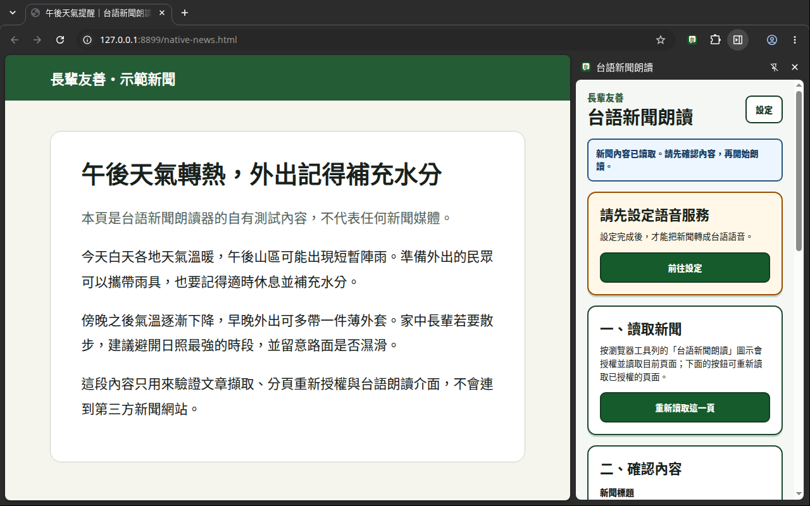
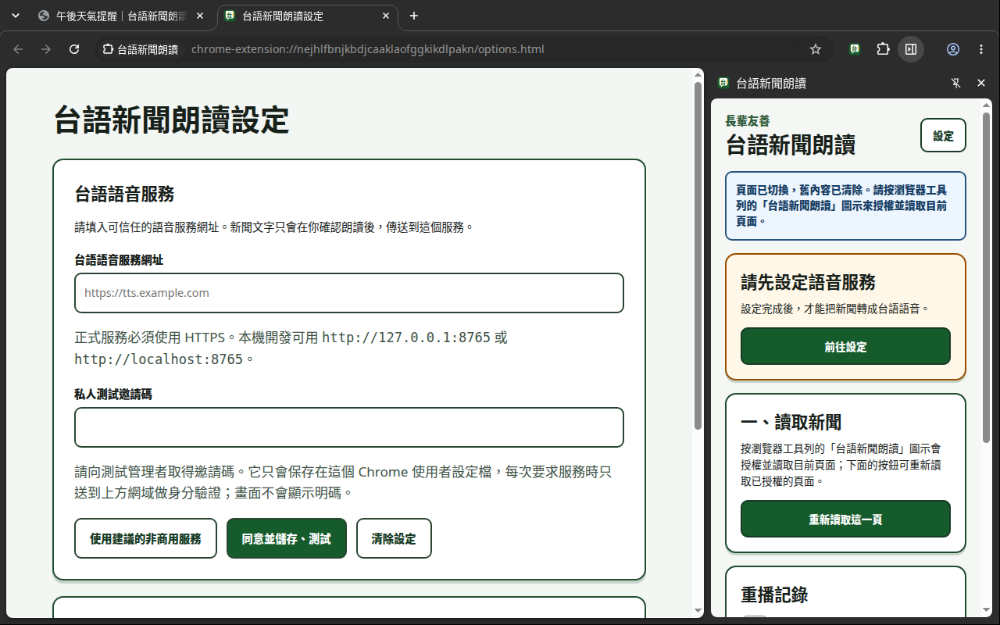

文字 → 台語 → 語音，先聽效果
三段實際產生的台語語音
這三段是已產生好的固定 MP3。直接按播放即可試聽，不會上傳文字、不會呼叫後端，也不會扣私人測試邀請碼額度。
天氣與交通
沿海風勢增強，外出留意路況
約 22 秒・固定示範音檔
無法播放？下載這段 MP3
查看原始華語與實際台語轉寫
原始華語：清晨沿海風勢較強，白天雲量逐漸增加，部分地區偶有短暫雨。民眾外出可準備輕便雨具，騎車經過空曠路段時請減速慢行。
台語羅馬字：tsá-khí-sî iân-hái ê hong-sè khah tōa ji̍t-sî hûn-liōng tsiām-tsiām tsing-ka pōo-hūn tē-khu ū-sî-á ē lo̍h bô-kú ê hōo tāi-ke tshut-mn̂g thang tsún-pī khing-piān ê hōo-kū khiâ-tshia king-kuè khui-khuah ê lōo-tuān ê sî-tsūn tshiánn sái khah bān
社區生活
無法播放？下載這段 MP3
查看原始華語與實際台語轉寫
原始華語：社區活動中心試辦週末共餐，由志工準備家常菜，也協助行動不便的長輩登記送餐。主辦單位提醒，餐點數量有限，請有需要的居民提前預約。
台語羅馬字：siā-khu oa̍h-tāng tiong-sim chhì-pān chiu-boa̍t chò-hóe chia̍h-pn̄g iû chì-kang chún-pī ka-siông-chhài iā pang-chān kiânn-lōo bô-hong-piān ê tióng-pòe teng-kì beh hōo lâng sàng-pn̄g chú-pān tan-ūi thê-chhenn chhan-tiám ê sòo-liōng iú-hān chhiánn ū su-iàu ê ki-bîn thê-chêng ū-iok
地方文化
地方影像保存居民記憶
約 21 秒・固定示範音檔
無法播放？下載這段 MP3
查看原始華語與實際台語轉寫
原始華語：地方文化館整理早年街景與生活照片，邀請居民分享照片背後的故事。工作人員將口述內容整理成文字，未來作為社區展覽與教育活動素材。
台語羅馬字：tē-hng bûn-hoà-koán chíng-lí chá-nî ê ke-kíng kap seng-hoa̍h siòng-phìnn kiò ki-bîn lâi hun-hióng siòng-phìnn āu-piah ê kò͘-sū kang-chok jîn-oân chiong chhùi-kóng ê lāi-iông chíng-lí chò bûn-jī āu-lâi beh chò siā-khu tián-lám kap kàu-io̍k oa̍h-tāng ê châi-liāu
這批固定樣本的產生方式：Gemini 3.5 Flash 先將自有華語短稿轉成台語羅馬字；加入網站前逐字檢查並修正明顯的詞義與拼寫問題，再由 facebook/mms-tts-nan 產生 WAV，最後只做音量調整與 MP3 轉檔。播放的就是上方列出的最終文字。
模型標示為 CC BY-NC 4.0，本站只作非商用展示。這批經檢查的固定樣本用來呈現 TTS 音色與流程，不保證每次即時翻譯都有相同品質；實際結果會隨內容與 provider 改變。台語用詞、腔口與發音仍可能不準，請以母語者與長輩的實際聽感為準；不要用於緊急、醫療或其他要求逐字正確的資訊。查看每段音檔的完整產生紀錄。
同一套擴充套件，兩種使用方式
想快速試用，或想自己掌控，都可以
一般使用者不必安裝模型；需要掌控服務、資料流與配額的人，也能部署自己的後端。先看哪條路適合你。
給受邀測試者
邀請制免費私人測試
由專案營運方準備翻譯與台語語音服務，你只需安裝 Chrome 擴充套件、填入個別邀請碼，就能開始試聽。
- 不用安裝 Python、Ollama 或大型模型
- 每位測試者使用可撤銷的個別邀請碼
- 有每日個人與全體共用配額，適合測試而非大量使用
- 目前仍在 Chrome Web Store 私人審查階段，沒有公開安裝連結
查看目前託管 DEMO 配額
目前每個邀請身分每天最多 20 個工作、12,000 個原文字元；擴充套件每段最多 500 字，因此實際通常先在約 10,000 字碰到工作數上限。全體測試者另共用每天 100 個工作、60,000 字，於台灣時間 08:00 重置。工作一經接受即計入，失敗或取消目前不退回。已保存的本機重播命中時不呼叫後端，也不扣配額。
目前不向受邀者收費；這是限額測試，不代表永久免費、公開註冊或提供 SLA。
給家庭、社群與開發者
私有自架，自行掌控
擴充套件不綁定 DEMO。你可以自行部署後端、管理使用者與配額，並決定翻譯和語音在哪裡執行。
- 翻譯可選 Groq、Gemini、其他 OpenAI-compatible provider，或本機 Ollama
- 台語語音可在自己的後端執行
facebook/mms-tts-nan
- Groq、Gemini 等 API key 只放在後端 secret，不會交給擴充套件
- 不使用專案 DEMO 的每日額度；你自行設定驗證、配額與資源上限
真實 Chrome・自有示範內容
實際操作與設定畫面
以下畫面由 exact 0.1.3 ZIP 在全新 Chrome 測試設定檔實際執行後拍攝。示範新聞為本專案自有內容，設定頁保持空白，不含邀請碼、API key 或第三方新聞圖文。

讀取與確認按工具列圖示後，側欄直接讀取當前頁面，再由使用者確認內容。

服務設定一般使用者填入受邀服務；自架者則填自己的相容後端網址與驗證碼。
查看換頁後的重新授權提示畫面：側欄不用關閉，再按一次工具列圖示即可讀取新頁。
把選擇權留在你手上
套件只在你操作後讀取目前分頁，預覽內容、語音服務與本機保存都由你決定。
1
先預覽，再送出
新聞標題與朗讀文字會先顯示給你確認，不會在背景持續監看瀏覽內容。
2
語音狀態說清楚
真正的台語 TTS、測試音訊與錯誤狀態會清楚區分，不用華語聲音假裝台語。
3
本機重播可選擇
重播記錄預設關閉；主動開啟後仍有篇數、容量與保存天數上限，也能隨時清除。
自架架構一眼看懂
擴充套件只連你指定的後端
後端負責保存服務設定、呼叫翻譯器與產生台語音訊；provider API key 不會寫進擴充套件，也不會出現在這個 Pages 網站。
-
1
Chrome 擴充套件
使用者確認後，只送出要朗讀的純文字
-
2
你的後端
管理驗證、配額、工作與秘密金鑰
-
3
翻譯服務
Groq／Gemini／OpenAI-compatible／Ollama
-
4
台語 TTS
本機 MMS 或相容 adapter 產生 WAV
連線必須可信
localhost／127.0.0.1 開發時可用 HTTP；其他位址，包括家中區網 IP，都必須透過 Chrome 信任的 HTTPS hostname 連線。
公開網路不能裸奔
若後端能從 Internet 存取，至少要有逐人驗證、每日配額、速率與資源限制、固定擴充套件來源，以及清楚的隱私告知。不要直接公開開發用 Uvicorn port。
金鑰只留後端
Groq、Gemini 或遠端 TTS 的 key 應放在未追蹤的環境設定或 secret manager。Provider 設定上，擴充套件只接收自架後端的網址與邀請碼，不接觸 provider key。
目前限非商用
專案程式碼採 MIT，但預設 facebook/mms-tts-nan 模型權重採 CC BY-NC 4.0。商用前必須改用授權合適的 TTS 或另行取得授權。
準備部署自己的版本？
從安全 LAN 範本開始，再依架構文件確認 provider、HTTPS、資料流與防濫用邊界。
受邀私人測試者
收到邀請碼後，這樣設定
這段給拿到私人邀請碼的測試者。安裝後只需在設定頁填入邀請訊息中的後端網址與你的邀請碼，就能開始朗讀；邀請碼只出現在給你本人的私訊裡，不會顯示在這個公開頁面。
-
安裝以收到邀請的 Google 帳號登入 Chrome，開啟邀請訊息裡的商店連結，點「加到 Chrome」。
-
填設定點工具列的擴充套件圖示開啟設定頁，貼上邀請訊息中的後端網址與你的邀請碼，按儲存；畫面出現剩餘每日額度就代表連線成功。
-
開始朗讀接著照下方「三步開始朗讀」操作即可，選取文字或讓它擷取正文，再按播放。
分享前先回答
常見問題
安裝者只要使用擴充套件；模型、供應商與伺服器設定，是託管方或自架者才需要處理。
一定要安裝 Qwen 或 Ollama 嗎？
不用。受邀使用專案 DEMO 的人不需安裝模型；自架者也能選 Groq、Gemini 或其他 OpenAI-compatible 翻譯服務。只有想把翻譯留在自己的主機時，才需要 Ollama 等本機模型；Qwen 只是實驗性參考，不是硬性依賴。
可以把自己的 Groq／Gemini key 直接填進擴充套件嗎？
不行，也不應這樣做。擴充套件只設定相容後端的 URL 與邀請碼；provider key 應保存在自架後端未追蹤的環境設定或 secret manager。
後端可以直接填 http://192.168.x.x 嗎？
不行。只有同機的 localhost／127.0.0.1 可用 HTTP；NAS、家用伺服器及其他 LAN 位址也必須使用 Chrome 信任的 HTTPS hostname。
自架後，新聞內容就一定不會送到第三方嗎？
不一定。若後端選 Groq、Gemini 或 remote TTS，相關文字仍會送給該 provider；只有本機翻譯＋本機 TTS 的路徑，才把處理留在自己的設備或私有網路。
可以拿來商用嗎？
repo 自有程式碼採 MIT，但預設 facebook/mms-tts-nan 權重是 CC BY-NC 4.0。這個組合目前只適用非商業用途；商用必須更換授權合適的 TTS，或另外取得授權。
這是一個仍在驗證中的非商用 MVP
台語翻譯、用詞、腔口與發音仍可能不準確，需要台語母語者與長輩持續試聽。請勿用於緊急、醫療、法律或其他需要逐字正確的內容。
預設 MMS 模型的非商用授權不會因本 repo 採 MIT 而改變；若替換 provider，也要重新確認授權、資料保存、訓練使用與隱私政策。
第三方授權說明・目前驗證範圍
{kind=link}